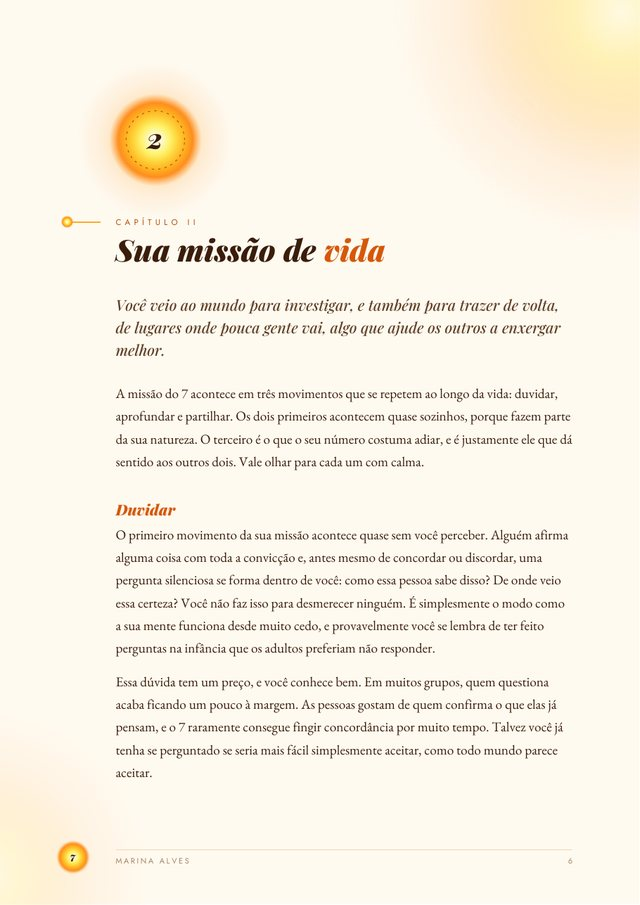
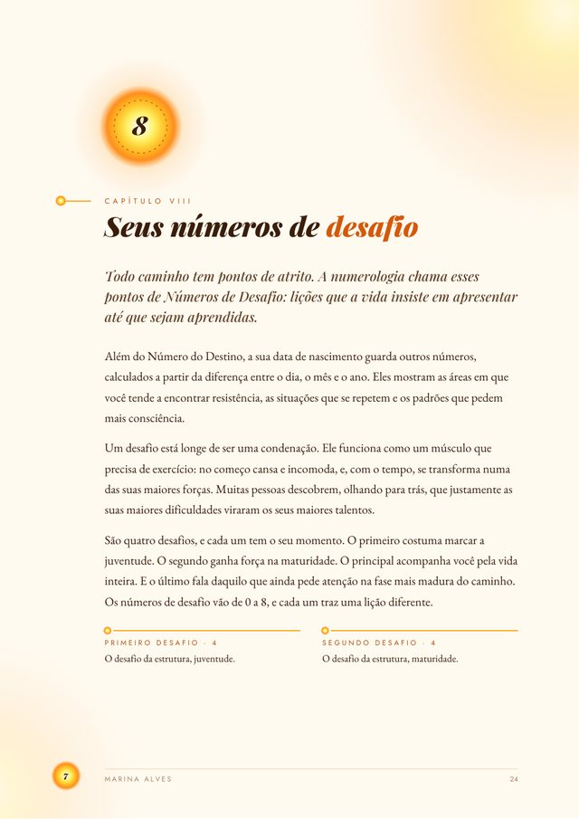
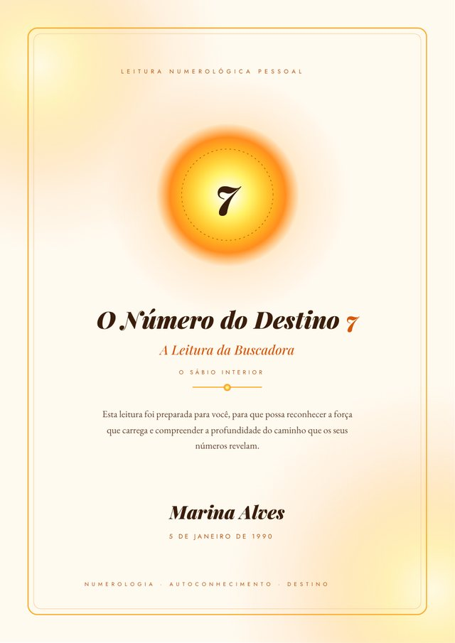

Numerologia · Número do Destino
O número que guarda a sua missão
Escondido na sua data de nascimento existe um número que fala de quem você é, do que veio fazer e do que ainda precisa aprender. Descubra o seu agora, de graça, e receba a leitura completa em PDF.
O que é
O seu destino, escrito em números
O Caminho de Vida, também chamado de Número do Destino, é o número mais importante da Numerologia.
Ele revela a missão central da sua existência: os talentos que você trouxe, os desafios que veio atravessar e a direção mais profunda da sua jornada. Enquanto outros números falam de partes da sua personalidade, o Caminho de Vida é o fio que costura toda a sua história.
O cálculo é antigo, herdado da ideia, defendida desde Pitágoras, de que cada número carrega uma vibração própria. E ele nasce de algo que é só seu: o dia em que você chegou ao mundo.
Como se calcula
24 → 6 · 07 → 7 · 1997 → 26 → 86 + 7 + 8 = 21 → 3


PDF · exemploA leitura completa
Muito além do número
Uma leitura de cerca de 28 páginas, escrita em linguagem acolhedora, com o seu nome na capa e cada capítulo dedicado ao seu número.
- Quem você éO seu jeito de ser, os seus dons naturais e a sua essência.
- Sua missão de vidaOs movimentos da sua missão e a decisão que se repete na sua vida.
- Suas sombrasOs padrões que pedem consciência, com caminhos para transformá-los.
- Amor e relacionamentosO que você precisa, o padrão que tende a criar e com quem vibra.
- Carreira e propósitoOnde você floresce, onde sofre e a sua relação com o reconhecimento.
- Saúde e bem-estarO que o seu corpo e as suas emoções pedem.
- Espiritualidade e crescimentoO sagrado do seu número e as práticas que nutrem você.
- Números de Desafio novoOs quatro desafios da sua data e a lição de cada um.
Os arquétipos
Os doze caminhos
Do 1 ao 9, e os Números Mestres 11, 22 e 33. Cada número é uma forma singular de existir, amar e realizar.
Sua leitura
Receba o seu Caminho de Vida completo
Leitura personalizada em PDF
- Cerca de 28 páginas sobre o seu número
- Seu nome na capa e o texto adaptado a você
- Missão, sombras, amor, carreira, saúde e espiritualidade
- Seus quatro Números de Desafio, calculados pela sua data
- Afirmações para cada fase da leitura
Feita por @matrixdodestino
Dúvidas
Perguntas frequentes
Preciso saber a hora de nascimento?
Não. O Caminho de Vida usa apenas o dia, o mês e o ano. A hora não muda o seu número.
Como recebo a leitura?
A leitura é enviada em PDF. Depois do pagamento, você recebe as instruções para receber o seu arquivo.
O que são os Números Mestres?
São o 11, o 22 e o 33. Eles carregam uma vibração mais intensa e não são reduzidos no cálculo. Quem tem um Número Mestre recebe uma leitura própria, escrita para essa vibração.
A leitura é diferente para cada pessoa?
Sim. Ela é escrita para o seu número, com o seu nome na capa, a concordância adaptada a você e os seus quatro Números de Desafio calculados a partir da sua data de nascimento.
Posso comprar para outra pessoa?
Pode. Basta usar o nome e a data de nascimento de quem vai receber. É um presente bonito para aniversários e momentos de recomeço.
Numerologia prevê o futuro?
A numerologia é uma ferramenta de autoconhecimento. Ela mostra tendências, talentos e desafios, e as escolhas continuam sendo suas.
A sua história já está nos seus números
Descubra o que o seu Caminho de Vida diz sobre você, e leve a leitura completa para reler sempre que precisar.
Calcular meu número